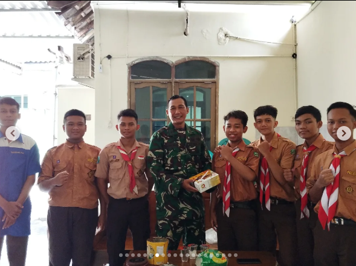
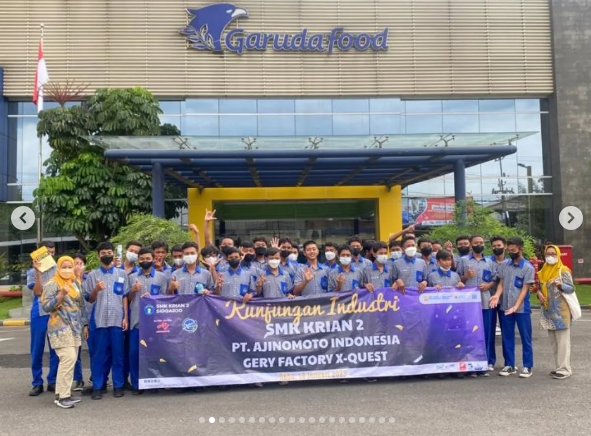
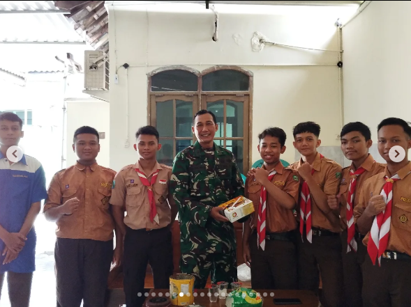
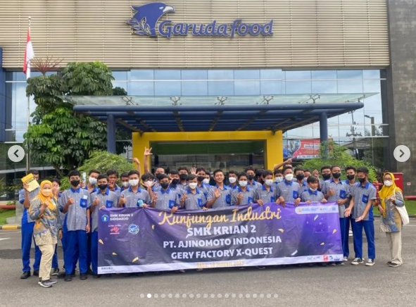
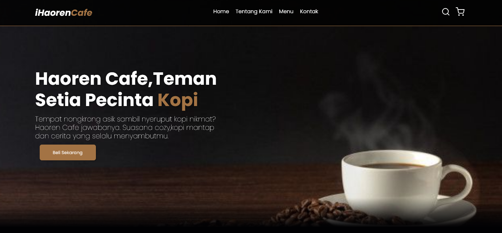
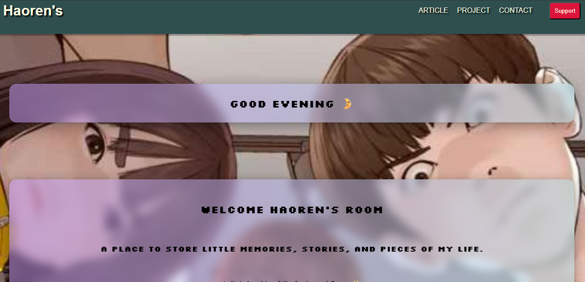

Hallo, Saya Ibnu Harun Almudzakir
Fokus membangun keterampilan & Pengalaman nyata
Tentang Saya
 



Lulusan SMK jurusan Teknik Elektronika Industri (TEI) dengan pengalaman magang langsung di lingkungan industri. Terbiasa dengan perbaikan motor listrik, troubleshooting panel kontrol, dan sistem kelistrikan pabrik. Memiliki minat belajar tinggi dan saat ini sedang mendalami dunia pemrograman.
Pengalaman
Magang/Praktik Kerja Lapangan
PT. Adiprima Suraprinta
July 2023 - December 2023
Selama magang di perusahaan manufaktur kertas ini, saya dirotasi di tiga divisi utama:
Proyek Portofolio
🌐 Web Haoren Cafe
Belajar membuat website dari channel YouTube Pemrograman Web UNPAS (Shandika Galih), Membuat website dari 0 sampai publish, dan saya mengikutinya sambil merubahnya sesuai dengan keinginan sendiri sambil berkreasi.
Lihat Proyek✨ Mini Personal Blog
Ruang digital untuk mengumpulkan kenangan dalam hidup saya, dan sedikit kreativitas (Masih dalam pengembangan)
Lihat Proyek🌐 Personal Linktree Page

Halaman web sederhana bergaya Linktree yang dibuat khusus untuk menampilkan tautan media sosial saya. Saya membangunnya dari awal sebagai bagian dari perjalanan pembelajaran Frontend Dev dasar saya, saya menggabungkan kreativitas dengan fungsionalitas di satu tempat.
Lihat ProyekKontak
Jangan ragu untuk menghubungi saya jika Anda ingin berkolaborasi, mendiskusikan ide, atau cuma sekadar menyapa. Saya selalu terbuka untuk peluang baru, atau percakapan yang bersahabat. Anda dapat menghubungi saya melalui salah satu platform yang tercantum di bawah ini.